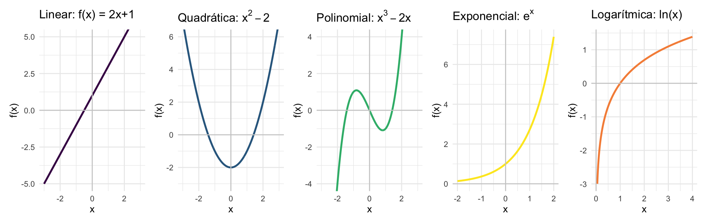

library(ggplot2)
library(patchwork)
base <- theme_minimal(base_size = 11)
x <- seq(-3, 3, length.out = 400)
p1 <- ggplot(data.frame(x=x, y=2*x+1), aes(x,y)) +
geom_line(color="#440154", linewidth=1) +
geom_hline(yintercept=0, color="gray80") + geom_vline(xintercept=0, color="gray80") +
coord_cartesian(ylim=c(-5,5)) +
labs(title="Linear: f(x) = 2x+1", x="x", y="f(x)") + base
p2 <- ggplot(data.frame(x=x, y=x^2-2), aes(x,y)) +
geom_line(color="#31688e", linewidth=1) +
geom_hline(yintercept=0, color="gray80") + geom_vline(xintercept=0, color="gray80") +
coord_cartesian(ylim=c(-3,6)) +
labs(title=expression("Quadrática: " * x^2-2), x="x", y="f(x)") + base
p3 <- ggplot(data.frame(x=x, y=x^3-2*x), aes(x,y)) +
geom_line(color="#35b779", linewidth=1) +
geom_hline(yintercept=0, color="gray80") + geom_vline(xintercept=0, color="gray80") +
coord_cartesian(ylim=c(-4,4)) +
labs(title=expression("Polinomial: " * x^3-2*x), x="x", y="f(x)") + base
x2 <- seq(-2, 2, length.out=300)
p4 <- ggplot(data.frame(x=x2, y=exp(x2)), aes(x,y)) +
geom_line(color="#fde725", linewidth=1) +
geom_hline(yintercept=0, color="gray80") + geom_vline(xintercept=0, color="gray80") +
labs(title=expression("Exponencial: " * e^x), x="x", y="f(x)") + base
x3 <- seq(0.05, 4, length.out=300)
p5 <- ggplot(data.frame(x=x3, y=log(x3)), aes(x,y)) +
geom_line(color="#f68f46", linewidth=1) +
geom_hline(yintercept=0, color="gray80") + geom_vline(xintercept=0, color="gray80") +
labs(title="Logarítmica: ln(x)", x="x", y="f(x)") + base
p1 + p2 + p3 + p4 + p5 + patchwork::plot_layout(nrow=1)